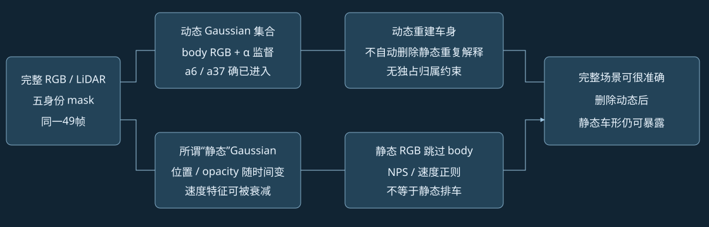
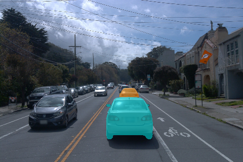
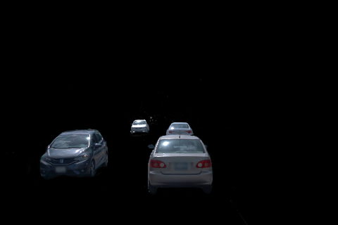
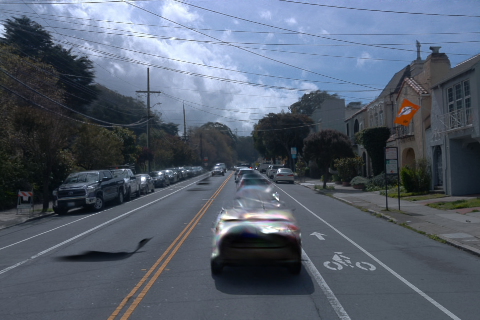

新五身份 GN11 第一阶段30K：动态已有车，静态为何还有车形
实验状态 · 完整49帧同步播放器 · 逐帧实际凭据
结论修订：a6、a37没有漏进动态输入，截图也没有把动态视频误标为静态。已确认当前原生GN11存在动态监督不保证两层排他的盲区，以及静态实际位置与速度正则使用不同运动量的约束漏洞。缺少道路观测仍会影响补全，但不足以解释或豁免静态层继续画车这一分离失败。
这是对实际输入、原始30K输出和已保存参数的CPU只读核查。训练更新0、GPU新任务0；A/B输入和正在运行的训练目标没有修改。不能据此宣布所有工程问题已排除，也未证明是哪几个Gaussian造成了截图里的每个像素。

1. 同一 raw129：两车确实进入动态集合
全部49帧的实际原生mask解码与五身份标签并集逐像素一致；30K原始评估保存的mask也逐像素一致。raw129的a6、a37分别有580、6388个body标签像素，均被原生动态mask覆盖。这个100%是标签间一致性，分割预测本身不是像素真值。
| 身份 | body标签像素 | 独立动态α均值 | 动态车身RGB误差 |
|---|
| a6 | 580 | 0.989055 | 3.62/255 |
| a37 | 6,388 | 0.994077 | 1.96/255 |
实际训练mask：橙a6，青a37；完整画面

30K独立动态集合；完整画面

30K独立静态分支；完整画面

静态输出直接来自原生renderer仅传静态Gaussian的独立光栅结果，未叠加动态集合；导出是原生PNG/FP32数组，没有车身裁切或补图。实际renderer字节与已归档上游固定SHA源码一致。
2. 动态重建成功，不等于静态删除成功
实际静态RGB目标是 L(static×(1−M), GT×(1−M))。这让车身区域退出静态RGB监督；动态RGB和动态α监督分别要求动态层画好车、α接近1，但没有把同一车辆的静态解释自动删除。
用raw129保存的真实FP32输出、真实mask和实际loss函数在CPU做autograd：静态RGB损失对全部body输出像素的梯度严格为0；动态α损失与独立静态α之间没有计算连接。此处是图像输出梯度，不是对全部Gaussian参数或所有损失的梯度断言。完整场景RGB仍能约束看见的错误；被动态表面遮挡的错误静态外观则可能不受惩罚。
两层独立α均接近1本身不能证明有两辆车：后面的正常道路也应不透明。因此不能用“静态α×车身mask必须为0”修复，那里应存在正确道路和街景。
3. “静态”分支仍有运动，正则又可能看不到它
实际原生静态位置：xyz(t)=xyz₀+v·sin((t−t₀)·2π/T)/(2π/T)；实际不透明度还乘时间高斯。速度正则和NPS输入却来自 v·exp(−temporal_width/T/2·decay)。增大时间宽度可压低受惩罚速度，却不消除前一个位置公式中的运动。
| 30K实际静态检查 | 结果 |
|---|
| 静态Gaussian总数 | 1,988,336 |
| 49个时间采样中心最大间距：中位／95分位／最大 | 0.372 / 1.324 / 4.252 米 |
| 衰减后的速度特征小于10⁻⁶ | 89.45% 的静态点 |
| 中心变化>10cm，同时速度特征<10⁻⁶ | 1,195,277 个点 |
这里的速度阈值使用模型坐标／模型时间，不是m/s；距离通过已核对的0.1坐标尺度还原米。计数是全场景统计，不能将其中所有点当成a6/a37或坏点。
三个相关getter与上游固定提交 560d57c3 的AST完全一致：这是继承的表示／约束漏洞，未发现本轮把这几个公式改错。NPS平滑速度特征也不等于验证车辆是否属于静态。
已有原生30K固定相机证据：下面视频保持raw99相机位姿与射线不变，只切换49个模型时间。静态结果明显变化；全图RGB绝对差均值最高8.30/255。反事实时间组合没有GT，仅用来证明它不是时间不变的静态表示。
480×320完整画面、49帧、10fps、全部I帧。只把原来已保存的静态时间检查数组编码成视频，没有重新渲染或训练。
实际getter数值核查 · 已有固定相机时间检查 · 上游源码比较
4. 初始化没有发现大规模原车点直接留在静态
原生初始化只从背景点云剔除距离动态种子0.1m内的点，不是按整个车身或运动扫掠体积剔除。动态种子实际149,072点，初始静态585,943点；不能与训练增密后的1,988,336点混用。
对raw89/107/128/129/137实测LiDAR中，同时满足真实3D车辆框和实际body mask的点做检查：a6在raw129的135个候选点里，0个在初始静态中找到1mm内对应；a37的1,215个候选点里有3个。其他锚帧仅0—1个。当前没有证据支持“大量a6/a37种子原封不动漏入静态”是主因；0.1m去重仍不保证所有语义车点被排除。1mm邻域不是Gaussian归属或最终像素贡献的真值。
5. 当前能下的结论与仍待闭合的问题
分离失败与道路补全失败需要分别验收。对你要求的干净静态街景，截图中的车形和亮条带不能算通过；已进入动态集合并不能为它辩解。“缺少道路观测”解释了为什么没有可靠背景真值，却没有解决静态层允许重复解释车辆的通路。
已排除的具体嫌疑是这两车没有进动态mask、标签时序错位、网页把动态当静态。确认的问题是静态车身RGB监督空白、没有互斥归属保证，以及速度特征衰减与实际位置变化不一致。尚未完成对造成车形的每个Gaussian的贡献／深度归因，因此不能把全场景运动点数当作车形像素原因的数量证明。
B也使用相同原生静态表示与约束，扩大到20身份不会自动消除这个漏洞。A/B仍按已授权的原配置与预算继续，当前不修改运行中的损失、不增加消融或新训练臂。最终完整画面结果作为基线证据，不能提前称为干净分离成功。若修复静态语义，应约束实际几何和动态时空占用，并保留后方道路；已观测道路与未观测补全再分别评估。
本报告文件、实际PNG、源码哈希、49帧视频编码与数值检查已完成；未宣称浏览器UI／解码交互验收。human_verdict=null。
实际源码原字节＋许可证 · 道路观测审计及本次结论补充